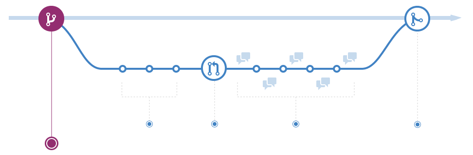

Part Two
Quick recap
What did we do last time?
- Install Apache + PHP + MySQL
- Install the new website on the local webserver
- try.github.io
What are we doing today?
- GitHub-flow
- MVC
- Services and the service locator
"Hello, World!"
GitHub-flow
There is a guide for this on GitHub guides, so you can review this later.
GitHub-flow
A simple process:
- Branch
- Make changes
- Pull Request
- Discuss
- Merge
Branch
First we create a branch for what we are going to change.
git branch <name>
git checkout <name>
A note on branch names
Branches for bugfixes should be named
fix/<name> and branches for new
features should be names feature/<name>
You should name branches like you name functions. Short sweet and to the point
Make changes
Lots of code!
Don't forget to commit!
It is generally better to commit a lot. It is better if you have a lot of small commits than a few large ones.
Pull request
TODO: image here
This initiates the discussion about the new feature or bugfix.
Pull request
You don't have to wait until you are finished. You can
show off your work early, and simply mark it with
[WIP] to show it shouldn't be merged yet.
Discussion
When a Pull Request is created, people can view the changes and comment on them. This way, we can easily review each other's code (peer review).
Merge
When a Pull Request is ready, it can be merged into
the master branch of the repository.
Note that in general, the person that created (a part of) the pull request shouldn't merge it.
That ensures that we do peer review.
MVC

MVC
MVC consists of three parts:
- Model
- View
- Controller